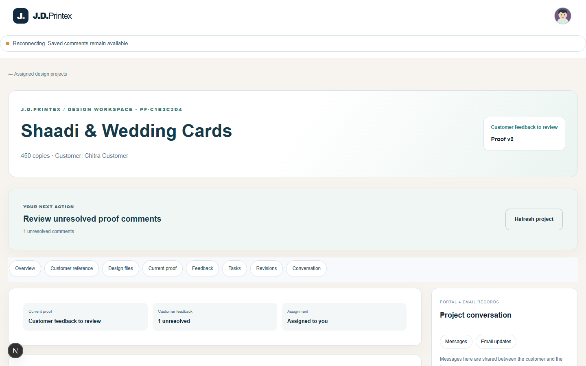
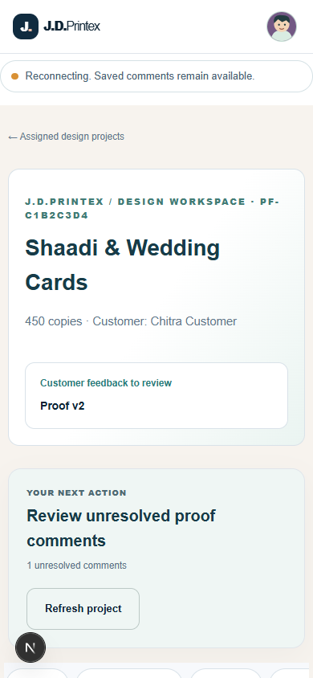
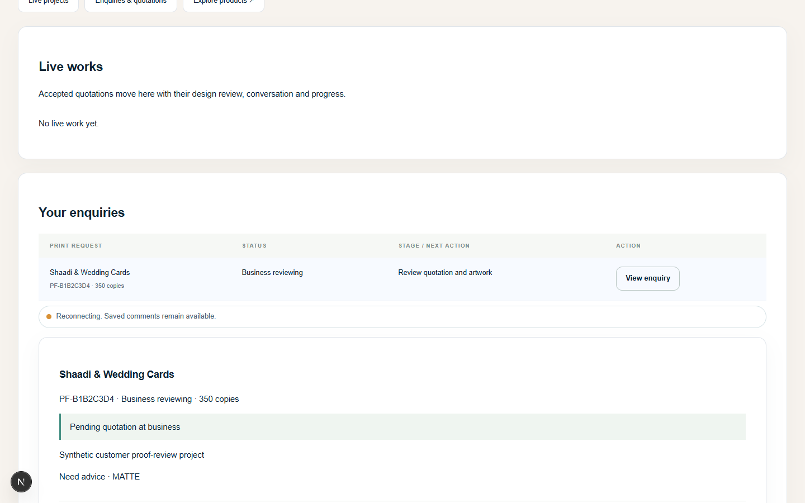
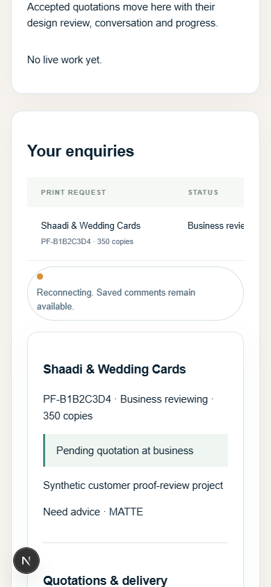

Actual browser captures of the synthetic designer/customer UI while the local collaboration WebSocket is unavailable. These show the reconnect fallback, not successful live collaboration.




Four focused Playwright checks passed across desktop/mobile and designer/customer fixtures. TypeScript, Next.js production build and Gradle unit tests/integration-test compilation passed. Native PostgreSQL, Spring API, real STOMP delivery and two authenticated browser sessions were unavailable; no live collaboration pass is claimed.